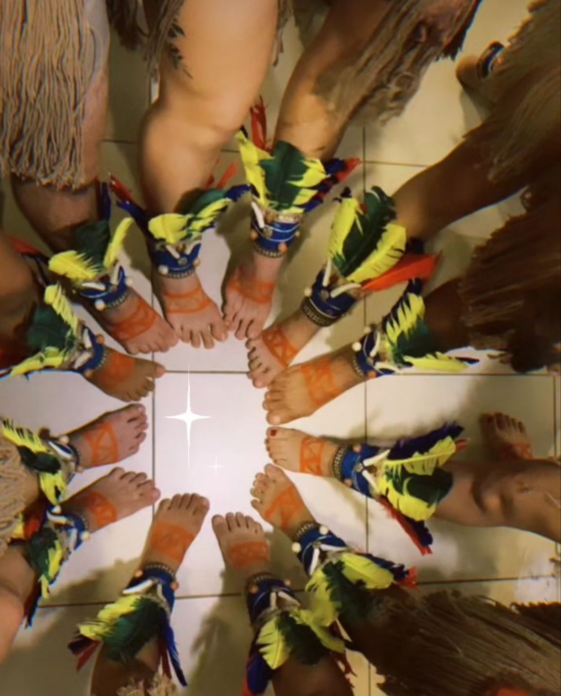

Somos Pé Vermelho
A coreografia “Somos Pé Vermelho” apresenta a figura do Pajé, uma palavra de origem tupi-Guarani utilizada para denominar a figura do conselheiro, curandeiro, feiticeiro e intermediário espiritual de uma comunidade indígena. O Pajé é considerado uma das figuras mais importantes dentro das tribos indígenas brasileiras, e também nos apresenta a figura da Cunhã, símbolo dos povos indígenas da Amazônia, Cunhã-Poranga é uma “ moça bonita, guerreira e guardiã, que expressa força através da beleza“. O personagem Cunhã-Poranga atua dentro de vários atos cênicos que representa rituais indígenas, lendas ou algum contexto amazônico
